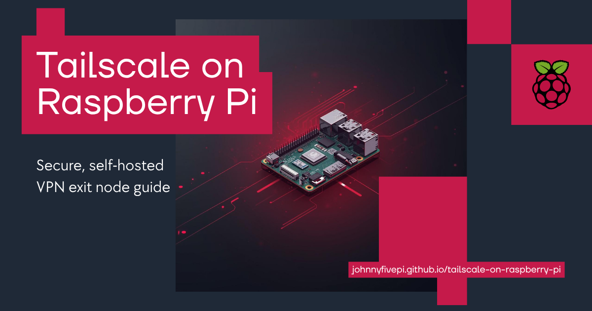

🧠 This guide was featured by Tailscale in their newsletter and on Twitter/X.
🔒 A beginner-friendly walkthrough for setting up a Raspberry Pi as a secure, self-hosted VPN exit node using Tailscale — with clear command-line steps and privacy-focused configuration.
💡 You’re viewing the full online version of this guide, hosted via GitHub Pages. Follow along step-by-step or jump to a specific section using the table of contents.
🧭 What You’ll Learn
- How to install and configure Tailscale on a Raspberry Pi
- How to set up an exit node for secure remote browsing
- How to enable IP forwarding and firewall rules
- How to verify your connection is working
- Common troubleshooting tips and commands
📦 Requirements
- Raspberry Pi 4 or 5
- 32-bit Raspberry Pi OS (Bullseye)
- Internet access and SSH/VNC setup
- Tailscale account (free for personal use)
📋 Guide Outline
- Install Tailscale and authenticate
- Understand and configure key expiry
- Enable IP forwarding and advertise the exit node
- Set the Raspberry Pi as an exit node in the Tailscale admin console
- Verify setup and routing
- Troubleshooting tips
💡 Why I Wrote This
I wrote this guide because I wanted a secure, lightweight VPN I could trust — and I wanted to actually understand how it worked.
After cobbling together info from different docs and forums, I decided to write the guide I wish I’d had: clear, beginner-friendly, and actually fun to follow.
This project helped me dig deeper into networking, security, and Raspberry Pi tinkering — and it’s now something I use every day when I’m away from home.
🧭 Planned Enhancements
- 🐧 Automate setup with a shell script
- 🌐 Add optional MagicDNS configuration and usage steps
- 📦 Include backup/restore instructions for long-term setups
- 📝 Add printable command reference sheet for quick setup
- 🎥 Maybe a video walkthrough someday!
🤝 Contributing
Suggestions, improvements, or ideas? I’d love your input!
- Open an issue or submit a pull request
- Found a better workaround for DNS or routing? Share it!
- Friendly contributions are always welcome — even typo fixes
🧩 Run this site locally (preview before pushing)
💡 Note: Run all commands from your local terminal (VS Code → View → Terminal).
You can preview this GitHub Pages site locally using Jekyll — the same engine GitHub uses — so you don’t have to commit every tiny CSS tweak like I did. 🫠
🔧 Option A: Ruby + Bundler (recommended)
-
Install Bundler (macOS/Linux):
gem install bundler -
Add a Gemfile in the
docs/folder:# docs/Gemfile source "https://rubygems.org" gem "github-pages", group: :jekyll_plugins gem "webrick" # required on Ruby 3+ -
Install and serve:
cd docs bundle install bundle exec jekyll serve --livereload -
Open the site:
- http://127.0.0.1:4000
Tip: leave the server running — edits to Markdown, CSS, and images will auto-reload.
🐋 Option B: Docker (no local Ruby needed)
-
From the repo root, run:
docker run --rm -it -p 4000:4000 -v "$PWD":/srv/jekyll jekyll/jekyll \ jekyll serve --source docs --livereload -
Open the site:
- http://127.0.0.1:4000
🧹 Troubleshooting running the site locally
-
Could not locate Gemfile
Make sure the file exists atdocs/Gemfileand you ran commands fromdocs/. -
CSS not updating
If the browser is caching, hard-reload or open a private window.
If needed, stop and restart the Jekyll server. -
Port already in use
Try a different port:bundle exec jekyll serve --livereload --port 4001
📄 License
This guide is licensed under the Creative Commons Attribution 4.0 License.
Use it, share it, remix it — just link back here and give credit. ✌️
Made with curiosity, coffee, and command-line trial & error ☕🖥️
Self-Hosting a VPN with Tailscale on a Raspberry Pi
Purpose of this guide
Inspired by my admiration for Tailscale and their innovative, open-source approach to networking, I decided to challenge myself by setting up a VPN on my Raspberry Pi. Along the way, I also wanted to create a walkthrough that anyone could follow, whether they’re just starting out or have more experience. The result? A detailed guide to configuring Tailscale on a Raspberry Pi, from flashing the microSD card to setting up an exit node.
Do you have a spare Raspberry Pi lying around just waiting for a fun project? If so, let’s give it a new purpose in life by turning it into our very own secure VPN! And, whether you’re a tech enthusiast, a Raspberry Pi hobbyist, or someone just starting out, I hope it inspires confidence to try something new.
Note: This is a personal project and not intended to be official in any way. It also doesn’t replace the wide range of official resources available in Tailscale’s own knowledgebase.
Table of Contents
- Introduction
- Prerequisites
- Preparing your Raspberry Pi
- Checking for Updates
- Setting up Tailscale on Raspberry Pi
- Understanding Key Expiry
- Configuring the Raspberry Pi as an Exit Node
- Troubleshooting
- Additional Notes
- Conclusion
- Support this project
- License
Introduction
In this guide, we’ll walk through setting up Tailscale on a Raspberry Pi and making it our dedicated exit node. This project will enable us to route our internet traffic securely through the Raspberry Pi, effectively building our own personal VPN using Tailscale.
First, did I mention yet that we’ll be using Tailscale? Yes? Oh, I mentioned it a few times? Even better!
Tailscale creates a private network called a tailnet, built on top of WireGuard, an open-source VPN protocol. The magic of Tailscale is that it simplifies the peer-to-peer mesh networking, handling much of the heavy lifting for us. [Insert an appreciative sigh of relief here: we no longer need to manage a traditional VPN server or “trust” a commercial VPN service.]
Note: Going through this process yesterday was relatively quick, but I wanted to make sure I understood what I was doing, what I was observing, and what speed-bumps I might have been accidentally speeding over. While catching some air was fun for all but the metaphorical vehicle’s suspension, we’ll slow down a bit in this guide, taking it step by step, ensuring we understand the process, and troubleshooting any bumps along the way.
Prerequisites
Before we dive into setting up Tailscale and our exit node on the Raspberry Pi, here’s what we’ll need:
- Raspberry Pi: Any model will do, though having one with a decent amount of resources (like a Raspberry Pi 3 or newer) will make the process smoother. I used a Raspberry Pi 4 B+, which moonlights quite literally as my Indi-Allsky timelapse machine.
- A microSD card: We’ll be flashing our microSD card with a Raspberry Pi OS in the next section of our guide.
- Internet access: Your Pi will need a stable connection to the internet (either via Ethernet or Wi-Fi). While I started with Wi-Fi, which works fine for general use, I switched to Ethernet for better stability, speed, and security. Ethernet offers a more reliable, faster connection with lower latency, reducing the risk of interruptions or slowdowns, especially when running services like Tailscale. It’s also a more secure option in environments where wireless networks may have vulnerabilities.
- A Tailscale account: We’ll need this to connect our Raspberry Pi and other devices to our private network. If you don’t already have an account, you can sign up for free!
- A computer or device to interact with the Raspberry Pi: You’ll need to connect to your Pi via SSH or directly using a monitor and keyboard. I used the command line to SSH into my Raspberry Pi, as I don’t have an extra keyboard, mouse, or display.
Preparing your Raspberry Pi
If you already know how to flash your microSD card with Raspberry Pi OS, you can skip ahead to the next section. For those of us who prefer a quick refresher or are new to this, let’s go over how to flash our microSD card with a Raspberry Pi OS!
Flashing the microSD Card
- Download and install the Raspberry Pi Imager:
- Grab the Raspberry Pi Imager for your specific operating system and install it.
- Download your preferred Raspberry Pi OS:
- From the official Raspberry Pi website, choose the Raspberry Pi OS you’d like to use, download it, and extract the compressed file to get the .img file.
- Since I’m using my Raspberry Pi for a few different projects, I chose Raspberry Pi OS with Desktop (64-bit) running Bookworm. This version gives us a full desktop environment while maintaining compatibility with modern software packages.
- Insert your microSD Card:
- Insert your microSD card but before proceeding, be sure to back up any data on it as the next part of the process will erase it.
- Open Raspberry Pi Imager:
- a. Click Choose Device, and select the Raspberry Pi device you’re using. My Raspberry Pi is a 4 B+, so I chose the Raspberry Pi 4 option.
- b. Click Operating System, scroll down, and select Use custom.
- c. Locate the Raspberry Pi OS .img file you downloaded earlier and click Open.
- d. Click Choose Storage and select your microSD card.
- e. With all three fields filled, click Next.
- Edit OS Customization Settings:
- a. Click Edit Settings.
- b. In the General tab:
- Set a hostname.
- Set the username and password.
- Note: While it’s okay to keep the default
piusername, to ensure security, I highly recommend leveraging a password manager to generate and securely store a strong, unique password. While Tailscale secures the connection itself, once your Raspberry Pi is connected to the network, it may be accessible to devices on your network–particularly if you set it up as an exit node. Creating a strong password and storing it securely in a password manager not only protects your Raspberry Pi from unauthorized access but also simplifies managing and remembering your credentials.
- Note: While it’s okay to keep the default
- Configure wireless LAN by entering your Wi-Fi’s SSID and password, and selecting your two-character country code from the dropdown menu.
- Set locale settings by designating your time zone and your keyboard layout.
- c. In the Services tab:
- Make sure to check Enable SSH.
- Choose the option to Use password authentication.
- d. In the Options tab:
- Select any of the options you’d like. I only checked Eject media when finished, but which options you choose or don’t is completely up to you.
- e. Click the Save button.
- f. In the Use OS customization window, click Yes.
-
Write the Image:
- a. A new window will come up alerting you to the fact that any existing data on your microSD card will be erased. Click Yes to acknowledge the warning and continue.
- b. It should start writing at this point, so now we can let the imager do its thing. After it has finished writing, it will start verifying.
This process may take several minutes.
-
Insert the microSD card into your Raspberry Pi:
- Once the writing and verifying are complete, eject the microSD card and insert it into your Raspberry Pi.
With that, we’re ready to SSH into our Raspberry Pi and start setting up Tailscale!
Using SSH to connect to your Raspberry Pi
-
Find your Raspberry Pi’s IP address:
- You can find your Raspberry Pi’s IP address through your router’s device management interface, or by using a network scanning tool like
nmap. You can also usehostname -Ifrom the Pi itself if you’re connected to it via a monitor and keyboard.
- You can find your Raspberry Pi’s IP address through your router’s device management interface, or by using a network scanning tool like
-
SSH into the Raspberry Pi:
-
On your local machine, open a terminal and enter the following command, making sure to replace
<Raspberry-Pi-IP-Address>with the actual IP. (The default username ispi, unless you changed it in Raspberry Pi Imager):ssh pi@<Raspberry-Pi-IP-Address>
-
-
Enter the password:
- When prompted, enter the password you set for the
piuser. Once authenticated, you’ll be logged into your Raspberry Pi!
- When prompted, enter the password you set for the
-
Confirm the connection:
- After logging in, you’ll be at the Raspberry Pi’s command prompt, ready to run commands.
Checking for Updates
Before moving forward, it’s a good practice to update our Raspberry Pi’s software to ensure that all the latest patches and security updates are installed. Here’s how:
-
Update Package Lists:
-
Run the following command to update the list of available packages and their versions:
sudo apt update
-
-
Upgrade Installed Packages:
-
After updating the package list, run the following command to upgrade any installed packages to their latest versions:
sudo apt upgrade -y -
The
-yflag automatically confirms the upgrade.
-
-
Optional: Full Upgrade:
-
To ensure all packages are fully upgraded, run:
sudo apt full-upgrade -y
-
-
Clean Up Unused Packages:
-
After upgrading, you can remove unnecessary packages that are no longer required:
sudo apt autoremove -y
-
-
Reboot your Pi:
-
After updates are installed, reboot your Raspberry Pi to apply the changes:
sudo reboot
-
-
SSH back in:
-
Since the reboot will terminate the current SSH session, we’ll need to open a new terminal window and SSH back into the Raspberry Pi:
ssh pi@<your_pi_ip_address>
-
Now we’re ready to start the fun part!
Setting up Tailscale on Raspberry Pi
1. Install Tailscale:
-
In terminal, run the following command to automatically download and install Tailscale:
curl -fsSL https://tailscale.com/install.sh | sh💡 This official installer sets up the correct repository, imports the signing key, and installs Tailscale for your OS (including Raspberry Pi OS / Debian).
Prefer a manual setup instead?
See Tailscale’s manual installation instructions for your specific Linux distribution.
2. Authenticate Tailscale:
-
Once installed, connect your Raspberry Pi to your tailnet and authenticate:
sudo tailscale up
3. Locate the Tailscale IPv4 address:
-
To find your Raspberry Pi’s new Tailscale IPv4 address, enter:
tailscale ip -4
High five! We’ve successfully installed and authenticated Tailscale on our Raspberry Pi, and located our Pi’s IPv4 address! Another excuse to stand up, stretch our legs, and treat ourselves to some celebratory noms!
Understanding Key Expiry
When setting up Tailscale, there’s an important security feature to consider: key expiry. To ensure security, Tailscale requires devices to reauthenticate after a certain period of time has elapsed. However, at the end of the initial set up, Tailscale’s official installation guide explains:
If the device you added is a server or remotely-accessed device, you may want to consider disabling key expiry to prevent the need to periodically re-authenticate.
Since key expiry is an important security feature, it’s worth diving into the details so we can make an informed decision. Let’s break it down! What the what is key expiry, you ask? By default, Tailscale’s device keys expire after 180 days, though this period may vary based on the pricing plan or domain settings. When a device key expires, the device will need to reauthenticate to remain part of our tailnet.
Let’s start with the perks! What are the benefits of keeping key expiry enabled?
-
Improved security:
- Expiry ensures that device access isn’t indefinite and can help mitigate risks in case of key theft or an unattended device. For example, if our device is compromised with key expiry enabled, it limits the risk of long-term unauthorized access to our tailnet.
-
Periodic reviews:
- Reauthentication serves as a natural checkpoint for periodically reviewing which devices should remain connected to our tailnet.
On the other hand, what are some reasons we might want to disable key expiry?
-
Convenience for always-on devices:
- For using our Raspberry Pi as a dedicated exit node, disabling key expiry ensures uninterrupted service, making it ideal for an always-on device.
-
Ease of use for headless setups:
- Disabling key expiry prevents reauthentication challenges on our Raspberry Pi when it’s set up to act as the exit node for the other devices on our tailnet - especially on devices without a display or direct input, and could interrupt service .
My Personal Decision:
For this guide and my own Pi, I’ve chosen to disable key expiry on the Raspberry Pi. This decision aligns with my goal of maintaining continuous service in a trusted, private environment.
Which Should You Choose?
- If your Raspberry Pi is in a trusted, private environment, then disabling key expiry can save you time and ensure uninterrupted operation.
- If your Pi operates in a shared or less secure environment, then keeping key expiry enabled is a safer choice to protect your tailnet.
Ultimately, this decision depends on your use case, risk tolerance, and how comfortable you are with the trade-offs.
Security Considerations:
Security is a bit of a balancing act, like trying to walk a swaying tightrope between convenience and making sure our network doesn’t get hijacked. Disabling key expiry might make life easier for our always-on Raspberry Pi, but it’s also true that a little extra protection (like periodic reauthentication) can go a long way toward keeping things secure.
In the end, it’s all about finding that sweet spot where security and convenience shake hands without tripping over each other-or, in our metaphor, without throwing off the balance of the whole thing, like trying to continue across that tightrope with one foot out of balance.
Learn more about key expiry directly from Tailscale.
Configuring the Raspberry Pi as an Exit Node
For some context, Tailscale only routes traffic between the devices on which we’ve installed it. It does not touch our public traffic like when we’re browsing the web, so if all we’re after is secure communication between our devices, we may not need extra encryption for our connection to the internet.
In other cases, if we’re away from home and relegated to networks that we don’t control and can’t trust, we can leverage Tailscale to handle (or, more accurately, route) our public traffic through our Raspberry Pi by setting it up as an exit node.
When we route our internet traffic through an exit node, we’re essentially adding an extra layer of security and privacy. The traffic between our devices and the exit node is encrypted from end-to-end by WireGuard, the open-source protocol Tailscale uses. This means that any data sent from our device to the internet is secured and protected from eavesdropping, which is especially vital on public networks like Wi-Fi hotspots.
However, it’s also important to understand that once our traffic exits the node and reaches its destination on the public internet, it is subject to the usual security measures (or lack thereof) of the websites or services with which we’re interacting.
So, the exit node ensures our traffic is secure and encrypted while it’s within our private network (our tailnet) and until it leaves through the exit node. After that, the security depends on the destination site.
Ref: Exit nodes (route all traffic) - Tailscale
With that in mind, let’s set up our Raspberry Pi as an exit node for our tailnet! Since we’re running Linux, we’ll need to enable IP forwarding and advertise our Pi as an exit node.
When you’re ready, SSH into your Raspberry Pi and follow these steps:
- Enable IP forwarding:
-
IP forwarding allows your Raspberry Pi to pass traffic between its network interfaces. We can use the following commands to enable both IPv4 and IPv6 forwarding:
echo 'net.ipv4.ip_forward = 1' | sudo tee -a /etc/sysctl.confecho 'net.ipv6.conf.all.forwarding = 1' | sudo tee -a /etc/sysctl.confsudo sysctl -p /etc/sysctl.conf
The first two commands add the necessary settings to the
sysctl.conffile while the final command applies the changes immediately without requiring a reboot. -
- Advertise the exit node:
-
Let Tailscale know your Raspberry Pi is ready to route traffic:
sudo tailscale up --advertise-exit-node
-
-
Confirm your exit node is active:
- a. Visit the Machines page from your Tailscale admin console.
- b. Locate your Raspberry Pi, and verify that it has an exit node badge.
- c. Click the ellipsis icon and select Edit route settings.
- d. Check the box to Use as exit node, then choose Save.
From the Tailscale app on our other devices, we can now use the Raspberry Pi as an exit node for secure traffic routing. Tailscale has us covered with step-by-step instructions on how to use an exit node depending on the type of device.
Troubleshooting
When I went through the process, there were a few places where I got tripped up temporarily:
-
DNS issues: If you encounter DNS issues (e.g., unable to resolve domain names), it could be due to Tailscale’s MagicDNS settings conflicting with your local network. You may need to disable MagicDNS temporarily and reconfigure DNS settings. For example, my Raspberry Pi was still trying to use the original DNS settings from my internet provider, rather than the settings from MagicDNS. Looking into it more, it came down to NetworkManager starting a fight for power over managing the DNS configuration. Thankfully, the official documenation helped me fix the issue manually: Configuring Linux DNS.
-
SSH access issues: If you’re unable to SSH into your Raspberry Pi using its Tailscale IP address, try using the device name instead (e.g.,
pi@thenameigavemypi).
If you encounter any issues along the way, not to worry, as Tailscale has a fantastic knowledgebase to help:
- FAQ - Tailscale
- Troubleshooting - Tailscale
- Exit Nodes
- DNS in Tailscale - Tailscale
- MagicDNS - Tailscale
- Route Traffic - Tailscale
⚙️ Optional: Improve UDP forwarding performance
If you see a warning like:
Warning: UDP GRO forwarding is suboptimally configured on eth0,
UDP forwarding throughput capability will increase with a configuration change.
See https://tailscale.com/s/ethtool-config-udp-gro
This means your network interface can be tuned for better throughput when acting as an exit node.
It’s optional — your setup will still work without it.
To enable UDP GRO forwarding permanently:
- Identify your primary interface:
ip -o route get 8.8.8.8 | cut -f 5 -d " "(Commonly
eth0on a Raspberry Pi.) - Create a small systemd service:
sudo nano /etc/systemd/system/udpgroforwarding.servicePaste this in, replacing
eth0with your interface name:[Unit] Description=Enable UDP GRO Forwarding Wants=network-online.target After=network-online.target [Service] Type=oneshot ExecStart=/sbin/ethtool -K eth0 rx-udp-gro-forwarding on rx-gro-list off [Install] WantedBy=multi-user.target - Reload systemd and enable the service:
sudo systemctl daemon-reload sudo systemctl enable --now udpgroforwarding - Reboot, then verify:
ethtool -k eth0 | egrep "(gro-list|forwarding)"You should see:
rx-gro-list: off rx-udp-gro-forwarding: on
Credit to @brkdncr for surfacing this tip and sharing a reproducible service example (Issue #1).
Additional notes
- Tailscale does not require a traditional VPN server setup. Instead, it creates a tailnet—a simple, private network where your devices are connected directly to each other.
- No logs are generated by Tailscale for your activity, thanks to the end-to-end encryption that comes with WireGuard. This makes it more secure and private by design.
- I started this project not just as a technical challenge, but also to explore networking, privacy, and security as I work toward growing my tech skills.
Conclusion
Self-hosting a VPN (and setting up an exit node) with Tailscale on a Raspberry Pi is not only fun but also a great way to improve your privacy and security while browsing the internet. If you’re interested in building a similar setup or want to ask questions about the process as I experienced it, feel free to leave a comment or reach out.
Maintainer note: Want to edit or contribute to this guide?
See 🧩 Run this site locally for setup instructions.
Support this project
Thank you, reader, for following along with me!
(^-^)/
☕ If this guide helped you set up your own Tailscale exit node, consider buying me a coffee on Ko-fi using the Support me button at the bottom left, or the one below. It keeps the Raspberry Pi humming, the coffee flowing, and new guides coming. 💻❤️
License
This project is licensed under the Creative Commons License - see the LICENSE file for details.